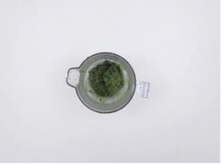
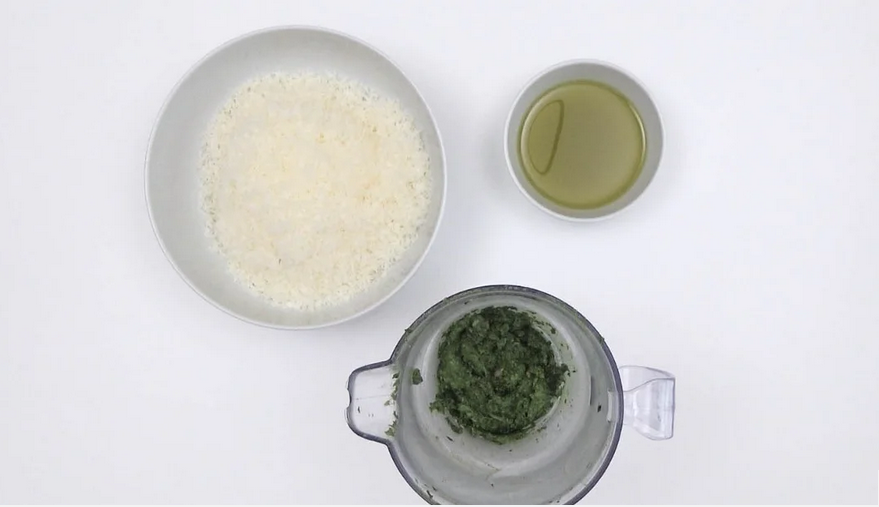
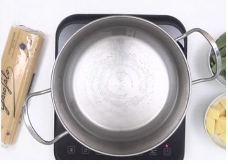
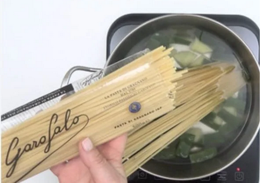

Volver
Índice de contenidos
Ingredientes
Paso a paso
Resultado final
Plato 1 (Pasta trenette al pesto)
A continuación veremos como preparar la pasta trenette al pesto
Ingredientes
320 g. de Linguine Garofalo
4 l.de agua para cocer la pasta, patatas y judías
2cucharadas rasas de sal para la cocción
2 patatas medianas
200 g. de judías verdes
Para el pesto genovés:
30 g. de albahaca
30 g. de queso Parmesano
30 g. de aceite de oliva virgen extra
5 g. de sal
15 g. de piñones
1 diente de ajo
Paso a paso
Pesto genovés
Después de haber limpiado las hojitas de albahaca, las secamos con cuidado
sobre un paño. En el vaso de la batidora ponemos el ajo, la sal y los piñones.
Trituramos hasta conseguir una papilla algo tosca. Añadimos las hojas de
albahaca seguimos triturando unos segundos.

Incorporamos el queso rallado y mezclamos bien. Ablandamos la masa vertiendo
despacio el aceite a hilo hasta obtener un compuesto homogéneo, cremoso y de buena consistencia.
Preparación de la pasta trenette. Cocción de los Linguine, las patatas y las judías
Pelamos las patatas y las cortamos en dados. Lavamos las judías verdes y las cortamos en tiras de 3-4 cm.
Calentamos en una cazuela grande, en este caso tengo reservada siempre en una
cazuela grande para este tipo de preparaciones. Es un lujo hacer un caldo, cocer
verduras, un buen guiso o simplemente hervir un poco de pasta.

Es necesario un litro de agua por cada 100 g. de pasta, es la medida
recomendada por persona, excepto si tenemos apasionados/as por los linguine
o spaghetti en casa. Estas proporciones, que normalmente vienen indicadas en los
envases, ayudan a que la pasta no se pegue entre ella. Y siempre intenta utilizar
una cazuela grande, la mayor de tu cocina. Si cocinas muchas veces pasta será muy
útil comprar una cazuela para esas ocasiones, una buena inversión.

Cuando empiece a hervir a borbotones echamos 1 puñado generoso de sal, unas 2 cucharadas
rasas. Seguidamente añadimos las patatas cortadas en dados y las judías verdes.
Una vez que las patatas y las judías verdes se hayan cocinado durante unos 10 minutos,
agregamos los linguine para el trenette. Revolvemos y dejamos hervir la pasta 10 minutos más.
Escurrimos reservando una taza del agua de cocción. Transferimos la pasta
con las patatas y las judías a un bowl grande.

Añadimos el pesto genovés que tenemos reservado y el agua de cocción de la pasta.
Mezclamos bien hasta que toda la pasta esté bien impregnada del pesto. Un plato que
simplemente es una genialidad, probadlo y ya me contaréis.
Resultado final

Volver al inicio de la página